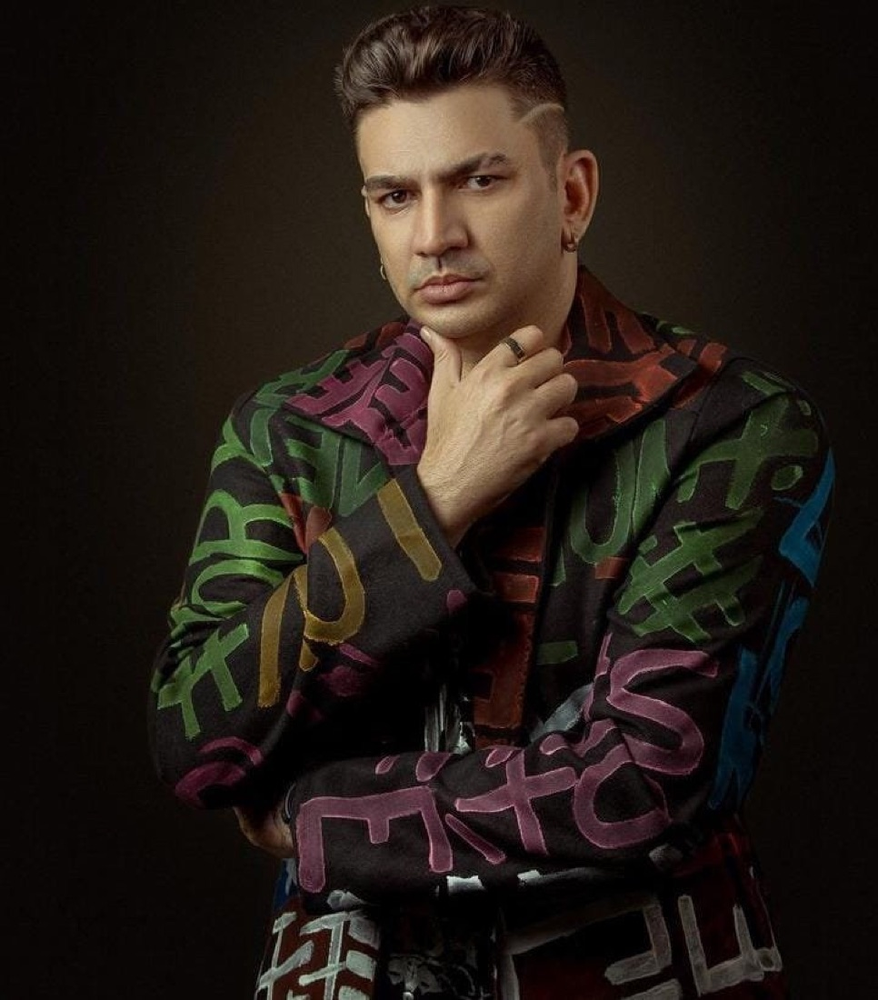
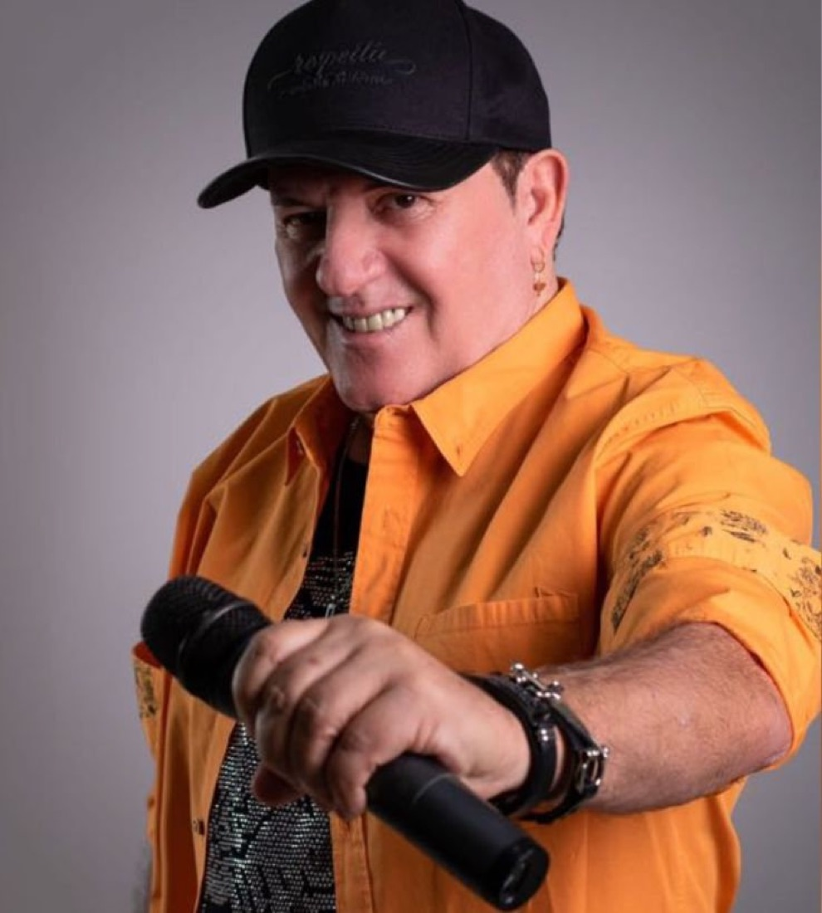
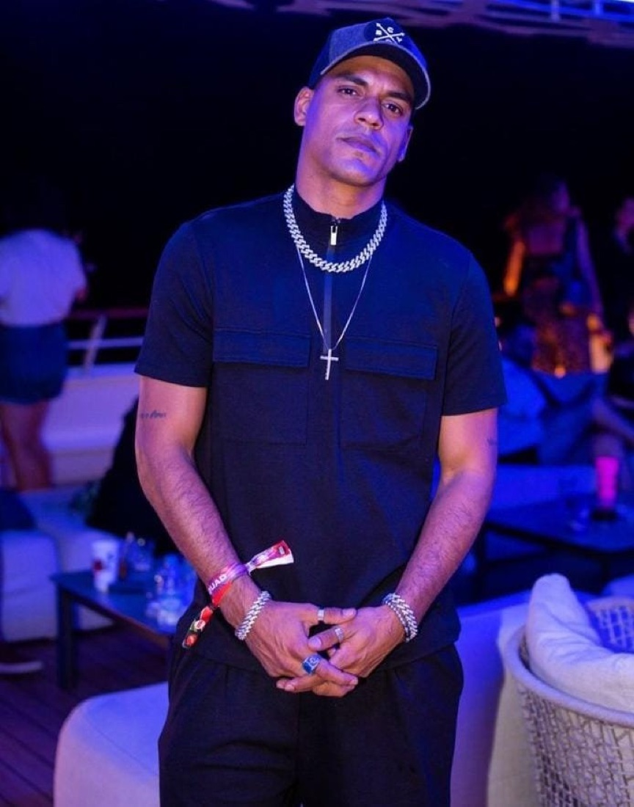

Nossos associados
Quem está com a ASSIM
Do forró à trilha sonora, da orquestra ao funk: gente que vive de música e confia à ASSIM a gestão dos seus direitos.
Quadro de filiados
Ver no relatório anual
19.537filiações acumuladas
6.748autores
5.427intérpretes
4.364músicos executantes
Adriana Mezzadri
Adylson Godoy
Amilton Godoy
Andersen Viana

Beto Caju
Caio Djay
Christiano Rocha
Claudio Infante
Claudio Machado
DJ Ivis
Eduardo Queiroz
Evsina Anastasiya

Felipe
Felipe Amorim
Gretchen
Ignacio Luz
José Loreto
Juno Moraes
Kaleb Capitão
Katia Cilene

Marcelo Mello Jr
Marcio Lomiranda
Marcus Viana
Music Mind
Filiação
Sua música também pode estar aqui
Intérprete, músico, compositor, selo, editora ou produtor fonográfico independente: a filiação é 100% digital.
Nada encontrado para “”. Tente outro nome ou fale com a gente pelo WhatsApp.